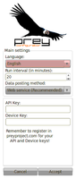
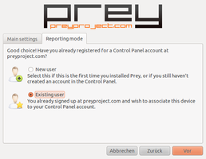

Prey
Dieser Artikel wurde für die folgenden Ubuntu-Versionen getestet:
Ubuntu 14.04 Trusty Tahr
Zum Verständnis dieses Artikels sind folgende Seiten hilfreich:
Prey  ist eine Open-Source-Anwendung, die das Aufspüren von verloren gegangenen oder gestohlenen Mobilcomputern und Android- und iOS-Smartphones unterstützt. Prey ist sowohl mit Linux als auch mit Mac OS X und Windows lauffähig. Je nach Ausstattung des Mobilcomputers können Alarmtöne, Screenshots und Bilder mit der internen Kamera erzeugt werden.
ist eine Open-Source-Anwendung, die das Aufspüren von verloren gegangenen oder gestohlenen Mobilcomputern und Android- und iOS-Smartphones unterstützt. Prey ist sowohl mit Linux als auch mit Mac OS X und Windows lauffähig. Je nach Ausstattung des Mobilcomputers können Alarmtöne, Screenshots und Bilder mit der internen Kamera erzeugt werden.
Die erzeugten Daten sowie die Position des Mobilgerätes werden im Webportal dargestellt oder via E-Mail gesendet. Die Registrierung von drei Endgeräten pro Benutzer ist kostenfrei, kostenpflichtige Update-Pakete sowie das Freischalten von Funktionseinstellungen können dazu gebucht werden.
Installation¶
Prey kann aus den offiziellen Paketquellen installiert [1] werden:
prey (universe)
 mit apturl
mit apturl
Paketliste zum Kopieren:
sudo apt-get install prey
sudo aptitude install prey
Fremdpakete¶
Die aktuelle Version kann auch als Fremdpaket von der Projektseite  heruntergeladen und manuell installiert werden [2]. Bei dieser Variante der Installation wird auch eine grafische Konfigurationsmöglichkeit installiert.
heruntergeladen und manuell installiert werden [2]. Bei dieser Variante der Installation wird auch eine grafische Konfigurationsmöglichkeit installiert.
Hinweis!
Fremdpakete können das System gefährden.
Anmerkung: Vor der Installation einer aktuellen Version sind bereits installierte Versionen zu entfernen!
Aus dem Quelltext¶
Sollte die Installation direkt von der Projektseite Probleme bereiten, besteht die Möglichkeit, den Quelltext von GitHub mit dem node package manager (npm) zu installieren. Dazu werden folgende Pakete benötigt:
git
prey (universe)
npm (universe)
mit apturl
Paketliste zum Kopieren:
sudo apt-get install git prey npm
sudo aptitude install git prey npm
Danach Prey installieren mit:
/usr/lib/prey/prey.sh /usr/lib/prey/prey.sh - -check sudo npm install -g prey
Hinweis!
Fremdsoftware kann das System gefährden.
Deinstallation¶
Beschrieben ist hier die Deinstallation, wenn prey aus dem Quelltext installiert wurde.
sudo npm uninstall -g prey
Danach muss man noch prey aus den offiziellen Paketquellen deinstallieren.
Konfiguration¶
Grafisch¶
Das Programm wird über die Kommandozeile gestartet:
Bei Installation aus den offiziellen Paketquellen mit:
sudo /usr/lib/prey/platform/linux/prey-config.py
Wurde eine aktuelle Version von GitHub oder der Projektseite installiert, benutzt man:
sudo prey config gui
Entweder legt man einen neuen Benutzer und ggf. ein neues Gerät an oder trägt - bei einem bestehenden Benutzerkonto (Account) - die jeweiligen Gerätedaten ein. Ist als Ziel für Berichte ein E-Mail-Postfach vorgesehen, werden die dazu benötigten Daten ebenfalls erfasst.
|  |
| Begrüssungsbildschirm |
|  |
| Details |
Kommandozeile¶
Vor der Verwendung muss auf der Webseite ein Account angelegt werden. Nach der Aktivierung steht der benötigte API-Key zur Verfügung. Linux-Mobilcomputer müssen manuell als Gerät hinzu gefügt werden, der dabei generierte Device-Key ist für die Anmeldung des Gerätes wichtig.
Die Konfiguration ohne grafische Oberfläche erfolgt über die zentrale Konfigurationsdatei /etc/prey/config, die mit Root-Rechten [3] bearbeitet werden muss. Prey kann die erzeugten Daten entweder an das Webportal senden oder direkt via E-Mail an den in der Konfigurationsdatei hinterlegten Empfänger.
# you can use send the report via email or to the web service # valid values: http, email, scp or sftp post_method='http' #################################################################### # http posting configuration #################################################################### # you can get both of these from Prey's web service api_key='' device_key=''
In der Konfigurationsdatei sind sowohl der API-Key wie auch der Device-Key zu hinterlegen. Sollen die Daten per E-Mail gesendet werden, müssen in der selben Datei die Konfiguration des SMTP-Server hinterlegt und der Parameter "post_method" mit "email" besetzt werden. Ein Beispiel für Google Mail als SMTP-Server:
#################################################################### # SMTP settings, for email posting #################################################################### # mailbox to send the report mail_to='mailbox@domain.com' # the password is now stored base64 encrypted # if you wish to generate it by hand, run # $ echo -n "password" | openssl enc -base64 smtp_server='smtp.gmail.com:587' smtp_username='username@gmail.com' smtp_password='password' # you dont need to change this mail_from='Prey <no-reply@gmail.com>' mail_subject='[Prey] Status Report'
Cronjob¶
Während der Installation wird ein Cronjob als /etc/cron.d/prey angelegt, der für den wiederkehrenden Aufruf im Hintergrund verantwortlich ist. Standardmäßig wird der Job alle 10 Minuten ausgeführt und, wenn das Gerät als "vermisst" markiert wurde, ein Report mit den zuvor geplanten Daten an das Ziel gesendet. Um das Zeitintervall zu ändern, muss die Datei mit Root-Rechten bearbeitet werden.
Testen¶
Nach der Eingabe [4] des Befehls:
sudo /usr/lib/prey/prey.sh --check
sollte - bei korrekter Konfiguration - das Webportal erreichbar sein und die Aufgaben werden abgerufen. Befindet sich das Gerät "in den richtigen Händen", passiert nichts weiter.
-- CHECK MODE ON. ### PREY 0.5.3 spreads its wings! ### Linux Lifebook-Ubuntu 3.0.0-15-generic #24-Ubuntu SMP Mon Dec 12 15:23:55 UTC 2011 x64_64 x64_64 x64_64 GNU/Linux -- Looking for connection... -- Got network connection! >> Verifying Prey installation... -- Checking if cron daemon is running... -- Cron daemon found. -- Checking for crontab entry... -- Found! >> Verifying API and Device keys... ** API key is valid. Your user account is correctly set up. ** Device key is valid. Good. Current status is ok.
Gerät vermisst¶
Nach der Anmeldung auf der Webseite und der Auswahl des registrierten Gerätes wird dieses über den Schalter "Missing" als vermisst markiert. In weiteren Einstellungen kann konfiguriert werden, ob z.B. der aktuelle Netzwerkverkehr, der angemeldete Benutzer u.v.m. erfasst und gesendet werden soll. Soll zusätzlich ein Alarmton abgespielt oder das Gerät aus der Ferne gesperrt werden, können beide Optionen ebenfalls im Webportal aktiviert werden. Des Weiteren kann der ungefähre Standort des Gerätes angezeigt werden.
 - Blogbeitrag, 05/2011
- Blogbeitrag, 05/2011 - Erstellt mit Inyoka
-
 2004 – 2017 ubuntuusers.de • Einige Rechte vorbehalten
2004 – 2017 ubuntuusers.de • Einige Rechte vorbehalten
Lizenz • Kontakt • Datenschutz • Impressum • Serverstatus -
Serverhousing gespendet von